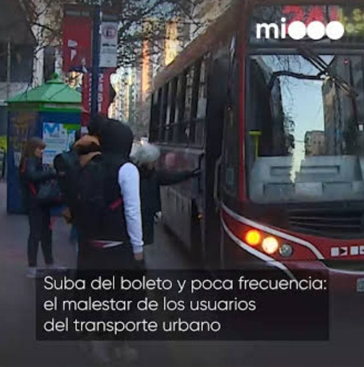
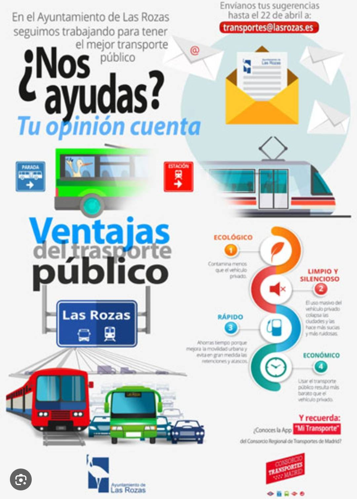
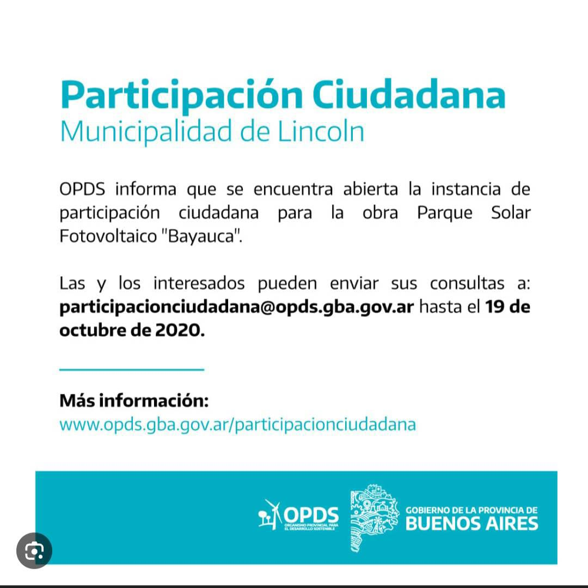

Situación Actual del Transporte en Córdoba
El transporte público en Córdoba es esencial para la vida cotidiana de miles de personas. Sin embargo, el sistema enfrenta varios desafíos relacionados con la frecuencia de los colectivos, la falta de información actualizada y el estado de algunas unidades.
Problema Identificado: Caos e Inconstancia
La falta de puntualidad y frecuencia inconstante de los colectivos genera largas esperas, demoras y malestar entre los usuarios, afectando especialmente a trabajadores y estudiantes. Esto no solo es una molestia, sino un impedimento real para la productividad y la calidad de vida.
Propuesta de Mejora: Plataforma de Movilidad Inteligente
Implementar una plataforma digital unificada (app móvil y web) donde los usuarios puedan ver en tiempo real la ubicación de los colectivos, los horarios estimados y las rutas disponibles. Además, incluir un sistema de reportes de incidencias que llegue directamente a la Municipalidad de Córdoba para una respuesta inmediata y transparente.
Participación Ciudadana: ¡Tu Voz es el Motor!
Los ciudadanos pueden participar enviando propuestas o quejas a través del portal municipal, redes sociales oficiales o participando en mesas barriales de movilidad. La **participación activa** ayuda a que las autoridades prioricen las verdaderas necesidades de la comunidad, impulsando el cambio.
Participá en el sitio oficial